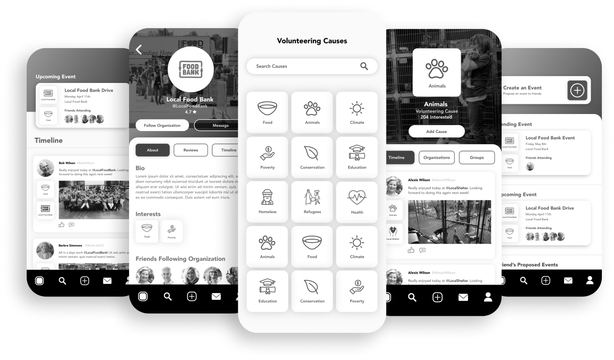
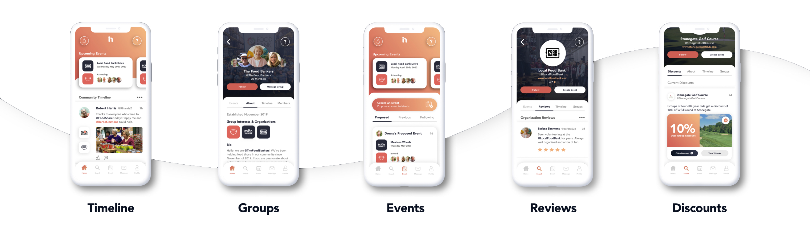
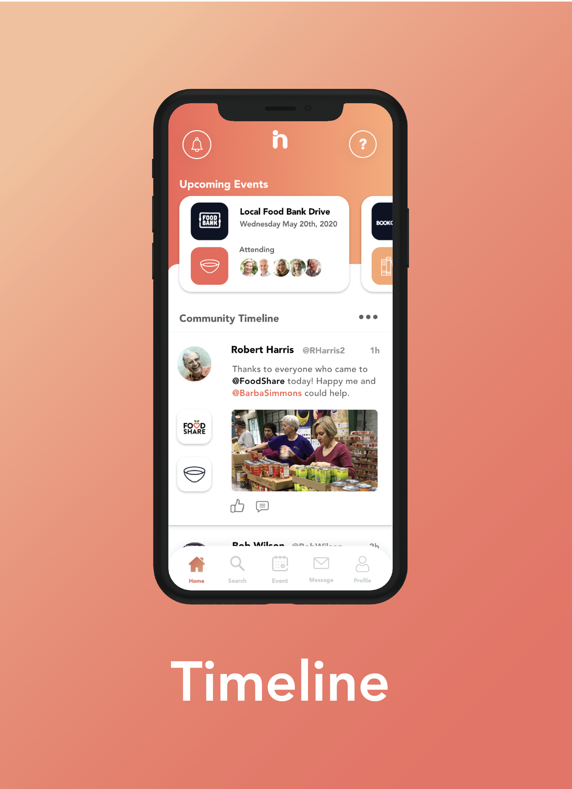
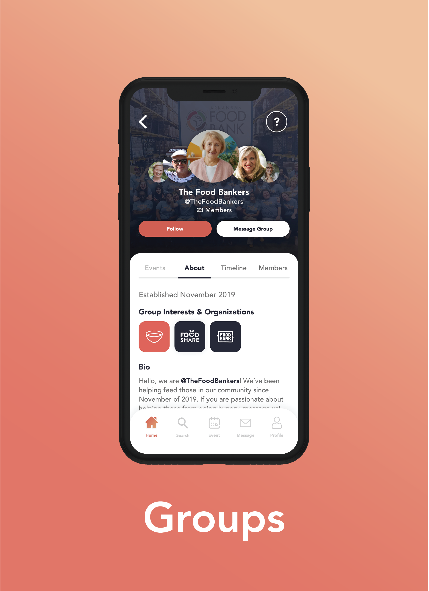
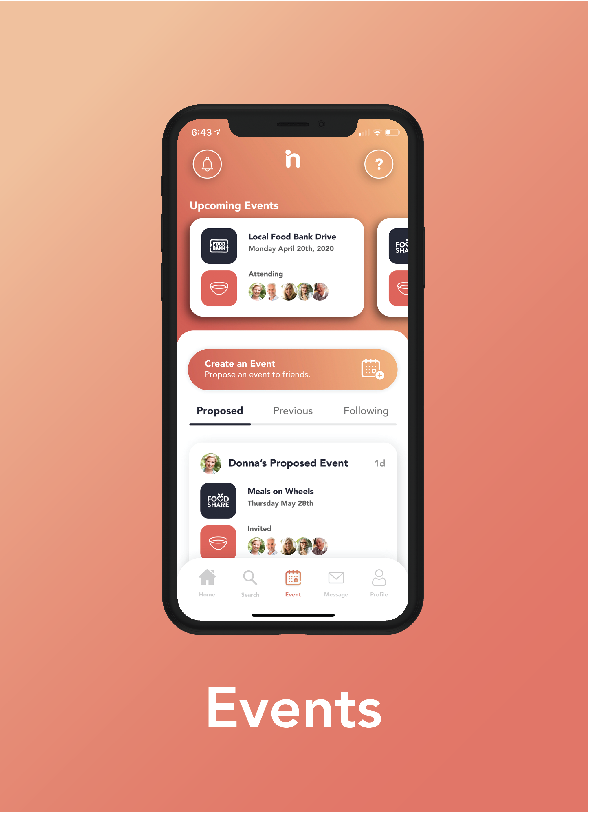
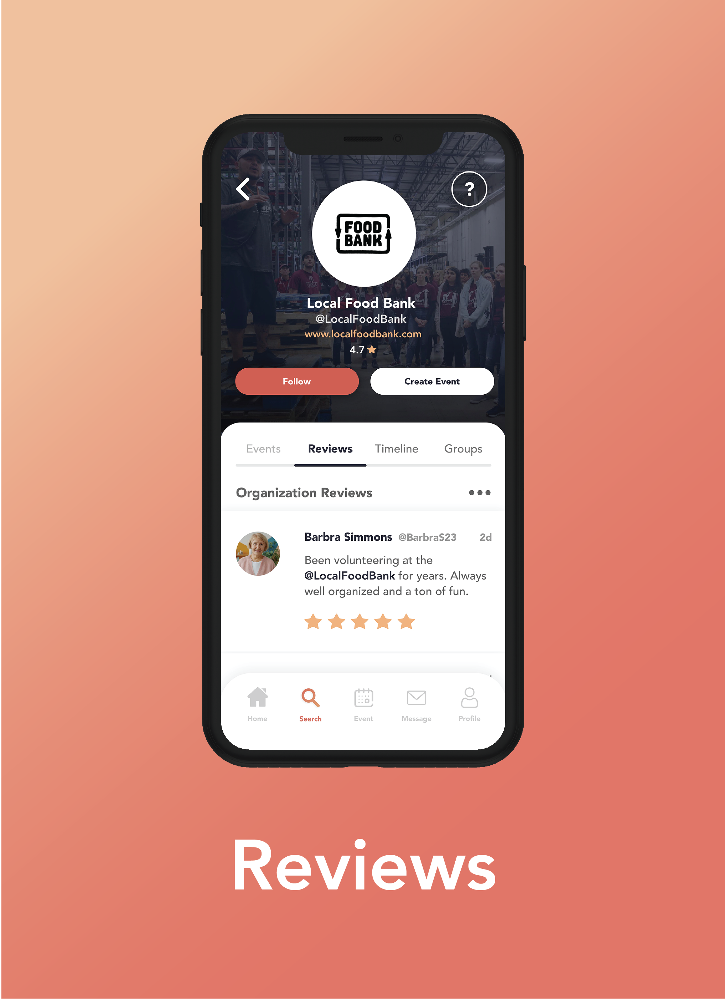
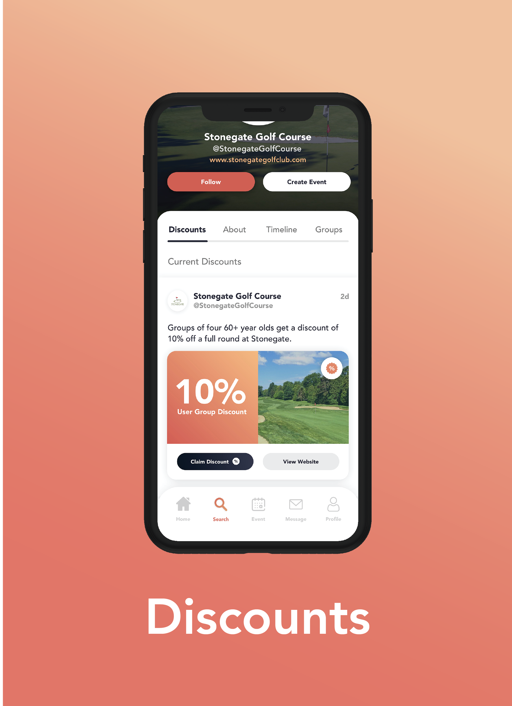

Ingage
Create & strengthen your relationships.

At a Glance
Impact at a Glance
User interviews conducted with retirees and near-retirees ages 60–75
Of interview participants would retire within 5 years at time of study
Were already retired at the time of our research
Indigo Design Award 2021 — recognizing the research-grounded design approach
The Challenge
Our professor challenged us with a deceptively simple brief: design a mobile app that integrates fun. Drawing from the article Elements of Fun in UX, we built around three core themes — a sense of connection, the thrill of the unknown, and the freedom of choice.
Rather than targeting a young demographic, our team asked: who truly needs more connection, more purpose, more engagement in their daily lives? The answer was clear — retirees.
"The most popular answers were volunteering, pursuing personal hobbies, and spending time with family. What retirees wanted most wasn't leisure — it was purpose."
The Solution
Ingage helps retirees find volunteer opportunities, connect with people who share their passions, and build long-lasting social relationships — all within their local community.

Research Process
As Research Lead, I was responsible for structuring our entire discovery process — from secondary research through affinity mapping. We used a layered approach where each phase informed the next and progressively challenged our assumptions.
-
Secondary Research & Competitive Analysis
Before talking to anyone, we audited existing tools targeting similar audiences. Two stood out: Point (strong UI, community-based, limited to Ohio) and AARP (wide reach, but light on social connection features with dated UI). Neither fully addressed the social loneliness and purposelessness that research tells us affects retirees. This was our whitespace.

-
User Interviews — 14 Participants, Ages 60–75
We conducted 14 qualitative interviews with people either approaching or already in retirement. These weren't just validation exercises — they actively broke our assumptions.
Our Assumptions Where We Were Wrong What We Learned Transitioning into retirement is difficult Most found the transition smooth Want to stay involved in family & community Travel is a major priority Travel priorities were conditional — health, finances, family first Want to pursue genuine passions Retirees are eager to volunteer Many had negative prior volunteering experiences Want to connect with people like them Want to feel a sense of purpose 
-
Online Survey — Quantifying the Signal
Using interview insights, we designed a focused survey to validate patterns at scale. Findings showed that social connection and purpose-driven activity consistently surfaced as core needs across our target demographic.


-
Affinity Mapping — Finding the Thread
After gathering language data from interviews and surveys, we organized ideas, opinions, and issues into natural groupings. The resulting map revealed something clear: social connection was the connective tissue between every other category. Passions, volunteering, travel, purpose — all roads led back to wanting to feel connected. This became the design spine of Ingage.


-
How Might We + User Personas
HMW questions helped us reframe research pain points as design opportunities before entering ideation. Personas grounded those opportunities in real human context — reminding us that our users had specific lives, routines, and emotional needs.


Key Findings
Social Connection is the Core Need
Social was the category with the most connections in our affinity map — linked to passions, volunteering, travel, and sense of purpose. Every other design decision flowed through it.
Purpose Over Leisure
Retirees aren't just looking for something to do — they want to feel that what they're doing matters. Volunteering and passion-driven activities rank higher than recreation.
Accessibility is Non-Negotiable
Users consistently flagged small text, unclear icons, and missing nav labels as blockers. Accessibility wasn't a nice-to-have — it was core to adoption.
Onboarding Must Build Confidence
Multiple participants asked for tutorials, help pages, and labeled navigation. First-time use needed to feel guided, not guessed at.
Prototyping & Testing
Given our older target demographic, we made a deliberate choice to skip lo-fi and go straight to mid-fi. Low-fidelity wireframes require users to mentally fill in gaps — something harder to do when you're less familiar with digital conventions. Mid-fi gave participants enough context to react meaningfully.
Mid-Fi Prototype


Mid-Fi Feedback — What Users Told Us
- Navigation icons were unclear without labels
- The events icon was confusing — users wanted a calendar icon
- Font sizes were too small for comfortable mobile reading
- Users wanted a tutorial or help section on first launch
- Some text required zooming in — impacting trust and usability

High-Fi: What Changed
The high-fi addresses every mid-fi pain point directly. Bottom navigation includes both icons and labels. Typography is scaled up across the board. An onboarding flow orients new users before they reach the main experience. And based on testing feedback, we added a new feature: Senior Discounts — a dedicated space where retirees find local deals tied to their specific passions, making engagement both social and practical.
- Onboarding questionnaire purpose is clarified — users now understand why interest selection shapes their experience
- Text sizing is increased further in key reading areas based on continued accessibility feedback
- Shortcut follow button is redesigned — the original implementation felt unclear and is replaced with a more intuitive interaction
- Help button is retained — users respond positively to having an accessible navigation aid throughout the app
- Passion-based discounts are a standout feature — users love the connection between their interests and local savings opportunities

Visual Design — Color With Intention
Every visual decision had a rationale tied back to our users. We chose a warm orange palette — not because it was trendy, but because orange communicates excitement, optimism, and enthusiasm. These are the emotions we wanted retirees to associate with engaging in their community.
Critically, we avoided pure black (#000000) throughout the app. True black can strain eyes, and for a demographic where vision changes are common, contrast that is high but not harsh was essential.
Typeface: Avenir — chosen for its clean readability and friendly, rounded geometry suited to an older demographic.

Final Screens — Click to expand





What I Learned
Research is where the real design work happens
This project was a real lesson in not designing for yourself. Every assumption we went in with was tested, and most needed adjusting. The research process — not the final prototype — was where the real design work happened.
Leading the research also taught me how to structure discovery in a way that keeps a team aligned. Mind maps, affinity diagrams, and HMW questions aren't just deliverables — they're shared thinking tools that make the problem visible to everyone.
Winning the Indigo Design Award validated the approach, but more importantly it confirmed that when you ground design in genuine human insight, the work speaks for itself.
Let's Connect
I'm always open to thoughtful conversations about design, collaboration, or new opportunities. The best way to reach me is email; I actually read it.